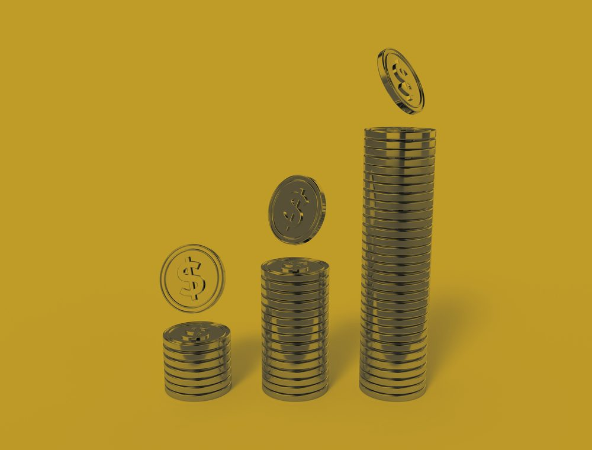

Convierte tu negocio en un sistema capaz de conseguir clientes.
AURENIX diseña y construye el sistema digital que conecta tu presencia online, la adquisición de clientes y el proceso de venta — para que tu negocio deje de depender únicamente de publicaciones, referidos o contactos ocasionales.
No necesitas más canales. Necesitas que trabajen juntos.
Ver cómo funciona ↓Ya tienes algo que vender.
El problema es conseguir clientes de forma consistente.
Muchos negocios ya tienen producto, clientes y capacidad para vender. Lo que falta es un sistema que conecte todo lo que ya tienen.
- Presencia digital desconectada.
- Publicidad sin dirección.
- Interés que no se convierte.
- Decisiones sin datos.
AURENIX conecta estas piezas en un mismo sistema para que cada acción pueda medirse, aprender y mejorar.
Es una sensación transversal — no importa el sector:
De ventas aisladas a un sistema repetible
El mismo negocio, dos formas de operar. AURENIX no cambia lo que vendes: cambia cómo llegan quienes te compran.
Un sistema. Seis capacidades.
El D.A.S. — Digital Acquisition System — es la estructura que utilizamos para identificar qué necesita realmente tu negocio y construirlo por etapas.
Construimos la infraestructura necesaria para vender digitalmente.
Creamos mecanismos para generar nuevas oportunidades de clientes.
Diseñamos el recorrido entre el primer contacto y la compra.
Medimos qué funciona, qué no y dónde está el cuello de botella.

Aumentamos lo que ya demuestra funcionar.
Reducimos el trabajo repetitivo cuando el sistema ya tiene suficiente volumen y estabilidad.
No todos los negocios necesitan las seis fases al mismo tiempo. El diagnóstico determina dónde empezar.
Cómo piensa el sistema
El diagnóstico decide el punto de entrada. Un negocio no siempre empieza en Digitalizar: puede entrar directamente en Adquirir, Convertir u Optimizar.
La regla de movimiento
El protocolo universal
- 01Contexto¿Qué está pasando?
- 02Problema¿Qué está impidiendo avanzar?
- 03Hipótesis¿Qué creemos que lo está causando?
- 04Experimento¿Qué haremos para comprobarlo?
- 05EjecuciónImplementamos.
- 06DatosMedimos.
- 07Aprendizaje¿Qué descubrimos?
- 08Decisión¿Qué hacemos ahora?
No ejecutamos por intuición. Cada decisión del sistema debe producir evidencia.
AURENIX funciona mejor cuando ya existe algo que vender.
Ideal para negocios que:
- Tienen un producto o servicio definido
- Ya tienen algún nivel de ventas
- Pueden atender nuevos clientes
- Están dispuestos a invertir en adquisición
- Quieren construir un sistema medible
No es ideal para:
- Negocios que todavía no han validado su oferta
- Personas que únicamente buscan publicaciones para redes
- Clientes que quieren resultados garantizados sin experimentar
- Negocios que no tienen capacidad para atender nuevos clientes
Preguntas frecuentes
Precio, tiempos y qué pasa si una hipótesis no funciona — sin letra pequeña.
Diagnóstico
Implementación
Growth / Optimización
Automatización
La inversión publicitaria, software de terceros y desarrollos extraordinarios se cotizan por separado.
¿Cuánto cuesta trabajar con AURENIX?
El Diagnóstico AURENIX tiene un valor de $350.000 COP.
Las implementaciones parten desde $3.500.000 COP, dependiendo del alcance.
Los servicios de Growth / Optimización están entre $1.500.000 y $2.500.000 COP mensuales, según el alcance.
La inversión publicitaria, software de terceros y desarrollos extraordinarios se cotizan por separado.
¿La primera llamada tiene algún costo?
No. La primera conversación es un Descubrimiento AURENIX de 30 minutos sin costo.
Su objetivo es entender tu negocio, identificar el principal cuello de botella y determinar si tiene sentido avanzar.
Si se requiere un análisis más profundo, podemos avanzar al Diagnóstico AURENIX, cuyo valor es de $350.000 COP.
¿Qué incluye el Diagnóstico AURENIX?
Analizamos el estado actual del negocio: infraestructura digital, adquisición, conversión y principales cuellos de botella.
A partir de esa información construimos hipótesis, prioridades y un roadmap de acción.
Tiene una duración estimada de 3–5 días hábiles. Si contratas la implementación dentro de los 30 días siguientes, su valor se acredita contra el proyecto.
¿Cuánto tarda implementar el sistema?
Una implementación típica puede tomar entre 3 y 6 semanas, dependiendo del alcance, complejidad y recursos necesarios.
No buscamos esperar meses para empezar a medir. Construimos, lanzamos, medimos y mejoramos progresivamente.
¿Qué pasa si el sistema no funciona?
AURENIX no garantiza una cantidad específica de ventas o clientes.
Trabajamos mediante diagnóstico, hipótesis, implementación, medición y aprendizaje.
Los datos y la evidencia determinan qué debemos mantener, modificar o descartar.
¿Con qué tipo de negocios trabajan?
Trabajamos principalmente con negocios que tienen una oferta definida, cierta capacidad operativa, algunas ventas existentes y disposición para invertir en construir un sistema de adquisición medible.
AURENIX no se plantea simplemente como un servicio de publicación de contenido ni como una promesa de resultados garantizados.
¿La publicidad está incluida?
Puede formar parte de la implementación cuando el diagnóstico determina que es necesaria.
La inversión publicitaria siempre se maneja como presupuesto independiente.
¿Tengo que cambiar la forma en que actualmente vendo?
No necesariamente.
Primero identificamos qué funciona actualmente y construimos alrededor de ello. No buscamos reemplazar algo que funciona sin evidencia.
Detrás de AURENIX
Construyo sistemas de adquisición para negocios que ya venden y necesitan una forma más estructurada y medible de conseguir nuevos clientes.
Qué sucede después de contactarnos
Un proceso de evaluación, no una llamada de ventas genérica.
¿Listo para construir un sistema que consiga clientes?
No necesitas añadir más canales. Necesitas que los que ya tienes trabajen juntos.